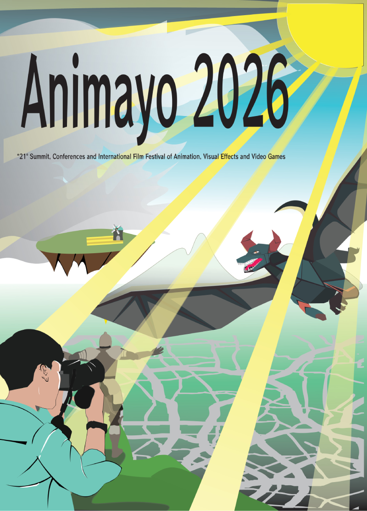
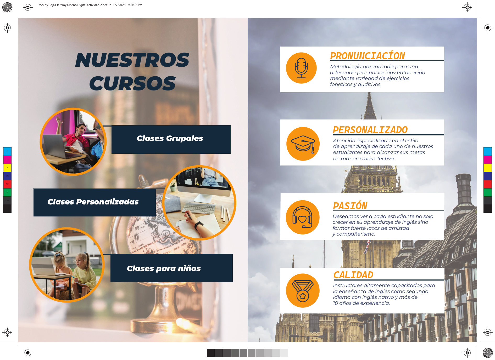
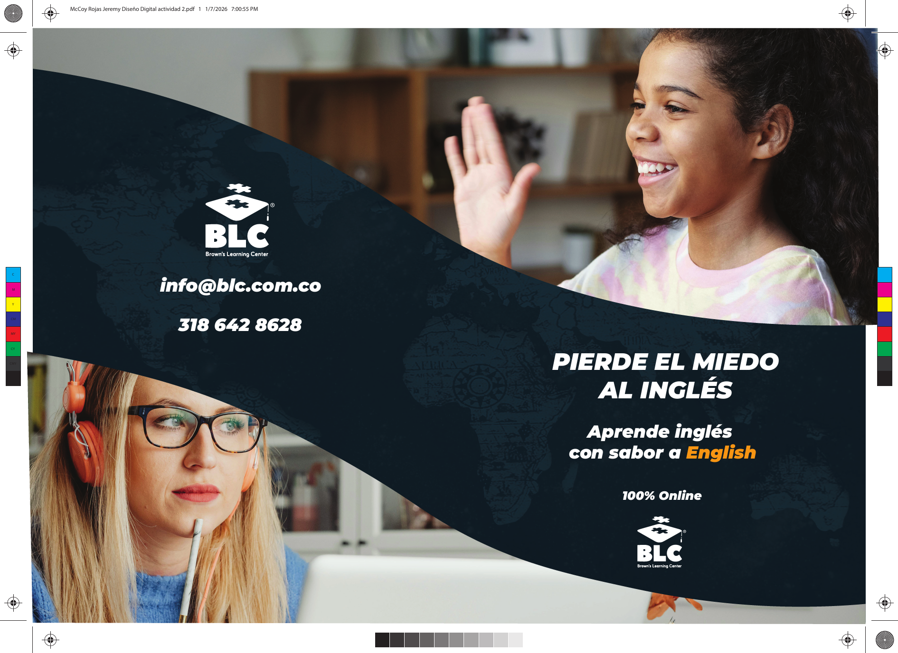
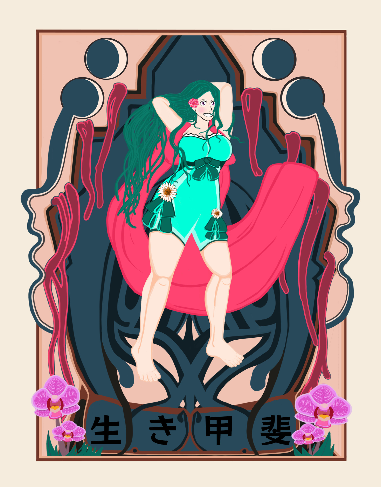

Fundamentos del Diseño
Antonio Herrera Delgado
Actividad 1
Herramientas
Adobe Illustrator y Modo CMYK
En esta actividad se diseñará un cartel vectorial para promocionar un evento, aplicando conceptos básicos de composición, tipografía, color e ilustración mediante Adobe Illustrator.

Este cartel está inspirado en la temática de Animayo 2026 y combina elementos de fantasía con el mundo del cine y la animación. La ilustración presenta un dragón y una escena dinámica que representa la creatividad y la narrativa visual del festival. El uso de luces, composición y personajes refuerza la sensación de aventura y exploración artística. El diseño fue desarrollado en Adobe Illustrator mediante vectores y en modo CMYK para su correcta preparación para impresión. Esta obra busca captar la atención del espectador y transmitir la esencia innovadora y visualmente impactante de Animayo.
Actividad 2
En esta actividad se diseñará y maquetará un díptico en Adobe Illustrator, trabajando la composición, la tipografía y el tratamiento de imágenes para crear una pieza gráfica atractiva y profesional.


En esta actividad realicé el diseño y la maquetación de un díptico para BLC, trabajando por primera vez con un formato de impresión real. Aprendí a organizar los diferentes paneles, distribuir la información y cuidar la composición visual, incorporando márgenes, guías y marcas de corte. Fue una primera experiencia en la preparación de un arte final para impresión, poniendo en práctica los conocimientos adquiridos sobre diseño, tipografía y composición.
Historia del Diseño
Laura Garcia Sanchez y Juan Jesus Torres Jurado
Actividad 1
En esta actividad se diseñará un cartel publicitario inspirado en el estilo Art Nouveau, combinando referentes históricos con elementos contemporáneos y justificando las decisiones creativas mediante un breve informe de investigación.

En esta actividad decidí utilizar la palabra Ikigai (生き甲斐), un concepto proveniente de la tradición japonesa que significa "razón de vivir" o "motivo de ser" (Hernández, 2021). Mi cartel presenta una figura femenina suelta y relajada con una prenda para dormir, inspirada en elementos del estilo Art Nouveau combinado con el manga-anime. Busco así unir la elegancia decorativa y natural del Art Nouveau con la expresividad y dinamismo característicos del manga-anime.
El cartel incluye un enmarcado y un fondo estilizado con líneas orgánicas, además de orquídeas. En mi exploración decidí usar enredaderas de tonos rojos, inspiradas en los colores de Caño Cristales, Colombia, un río que tiene plantas acuáticas de muchos colores, especialmente el rojo.
El Ikigai es una idea tanto del presente como del pasado. Representa la noción de vivir plenamente el momento, más que un objetivo a alcanzar; es una experiencia cotidiana que se manifiesta en cada acción realizada con propósito o disfrute. Por esta razón, decidí que mi personaje sonriera, transmitiendo serenidad y alegría como reflejo del Ikigai en el presente (Hernández, 2021).
El vestido de tonos verdes y suaves, junto con los elementos florales como las orquídeas y las margaritas, simbolizan la conexión con la naturaleza y el equilibrio interior. La tela flotante representa libertad y vitalidad. La suavidad de las líneas y los tonos crema refuerzan esta sensación de calma, equilibrio y armonía interior, y el enmarcado pone en foco todos estos aspectos.
Mi intención es que el espectador de este cartel sonría y, de esa manera, encuentre su Ikigai: la noción de vivir plenamente el momento.
Elementos del cartel
- Figura femenina
- Orquídeas y margaritas
- Enredaderas rojas
- Enmarcado